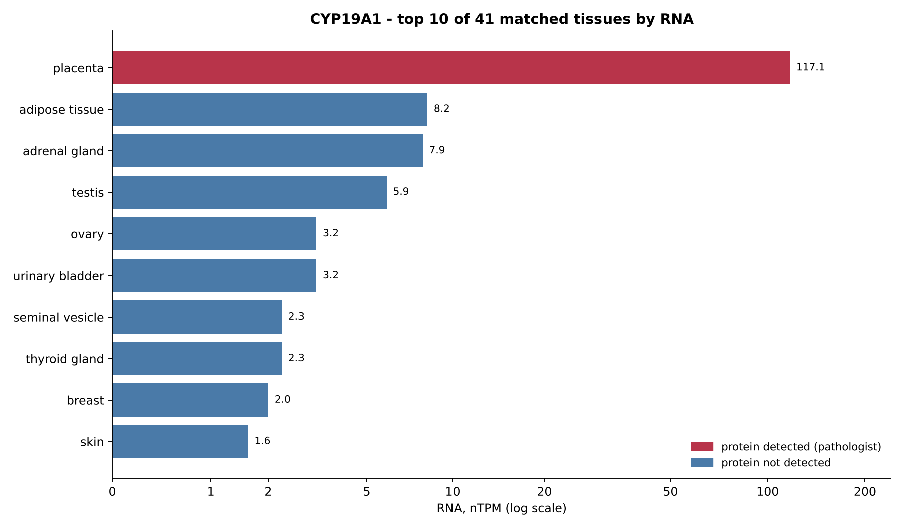
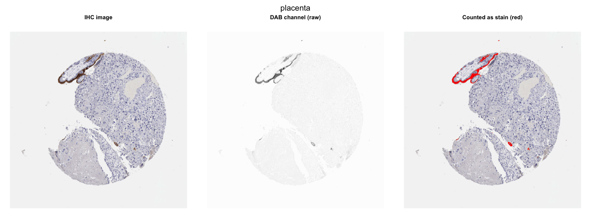
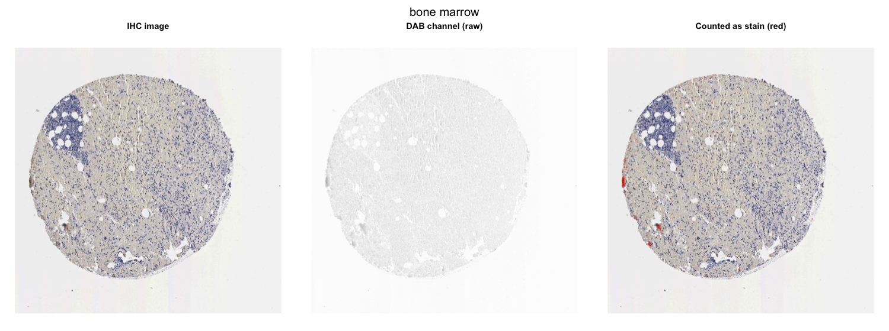
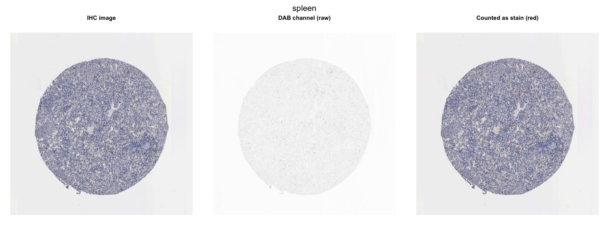
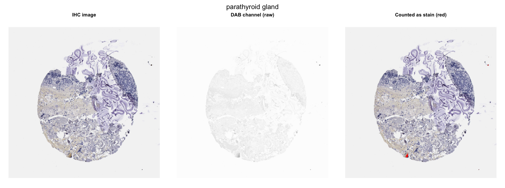
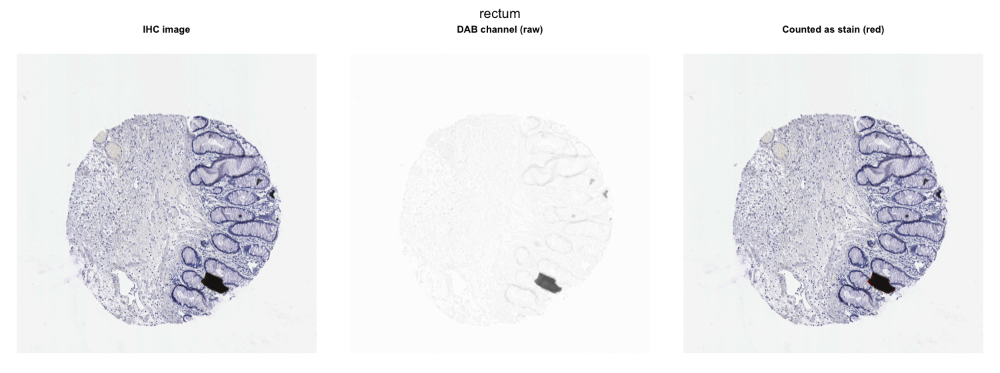
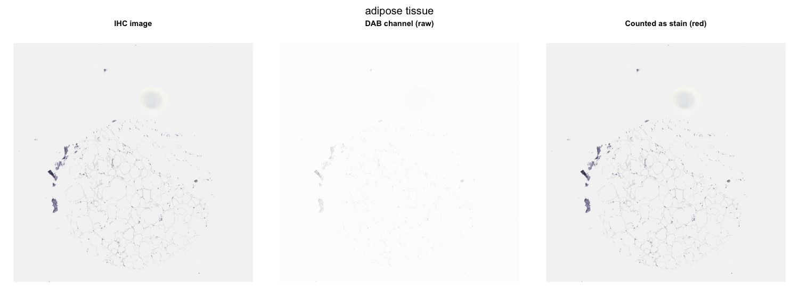

My earlier project ranked CYP19A1 (aromatase) RNA across human tissues. RNA is not protein. This project asks whether the protein, measured directly from tissue staining images, follows the same pattern.
Pathologists at the Human Protein Atlas scored CYP19A1 staining in 45 normal tissues. Protein was detected only in placenta (syncytiotrophoblasts, level High), which is also the top RNA tissue (117.1 nTPM). The next highest RNA tissues, adipose tissue (8.2 nTPM), adrenal gland (7.9), testis (5.9) and ovary (3.2), show no detectable protein. Across the 41 tissues present in both tables, pathologist level against RNA gives Spearman rho = 0.27 (p = 0.089): only a weak trend, because one tissue drives it.

| tissue | RNA (nTPM) | pathologist protein | cell types examined |
|---|---|---|---|
| placenta | 117.1 | High | syncytiotrophoblasts – cell body |
| adipose tissue | 8.2 | Not detected | adipocytes |
| adrenal gland | 7.9 | Not detected | glandular cells |
| testis | 5.9 | Not detected | cells in seminiferous ducts; Leydig cells |
| ovary | 3.2 | Not detected | follicle cells; ovarian stroma cells |
| urinary bladder | 3.2 | Not detected | urothelial cells |
| seminal vesicle | 2.3 | Not detected | glandular cells |
| thyroid gland | 2.3 | Not detected | glandular cells |
| breast | 2.0 | Not detected | adipocytes; glandular cells; myoepithelial cells |
| skin | 1.6 | Not detected | fibroblasts; keratinocytes; Langerhans cells; melanocytes |
For 135 images (3 per tissue) the brown antibody stain (DAB) was separated from the blue nuclear stain by colour deconvolution (Ruifrok and Johnston 2001). Tissue was separated from background glass by Otsu thresholding, and DAB inside the tissue was scored as weak, moderate or strong and combined into an H-score-like value from 0 to 300. A pixel only counts as stain if it is browner than blue (DAB signal at least equal to haematoxylin), which removes dark folds, debris and pigment.
The 3 placenta images, the only tissue called positive, have a median H-score of 56.4, against 0.01 for the 132 images from tissues called negative (Wilcoxon p = 0.0032). The automated score separates stained from unstained tissue in the same way as the pathologist, so the pipeline picks up real CYP19A1 staining. The five highest-scoring tissues were placenta, bone marrow, spleen, parathyroid gland and rectum.
Each panel shows the original image, the raw DAB channel, and in red the pixels counted as stain after the brown filter. Only placenta shows real brown staining; the small red specks in the other high-ranking tissues are debris at the tissue edge, and the black blob in rectum is removed by the filter.
Placenta

Bone marrow

Spleen

Parathyroid gland

Rectum

Adipose tissue

If CYP19A1 protein were present below the pathologist's detection limit, the image score should still rise with RNA in the 40 tissues called negative. Without the brown filter it seems to: rho = 0.31 (p = 0.049). With the filter: rho = 0.14 (p = 0.40). So quality control changed the conclusion. The apparent link between RNA and staining came from folds, debris and pigment, not from antibody; once those pixels are removed, it disappears.
| comparison | tissues | Spearman rho | p |
|---|---|---|---|
| Pathologist protein level vs RNA | 41 | 0.27 | 0.089 |
| Image score vs RNA, all tissues | 41 | 0.20 | 0.21 |
| Image score vs RNA, without placenta – before brown filter | 40 | 0.31 | 0.049 |
| Image score vs RNA, without placenta – after brown filter | 40 | 0.14 | 0.40 |
source("run_all.R") from the project folder in R (4.0 or later). It downloads the tables and images once, scores
every image, and writes this page with the full set of figures. Code: github.com/bymankirat/CYP19A1-Protein-Images-R. Seed 1.
Data: Human Protein Atlas, www.proteinatlas.org (Uhlen et al., Science 2015), CC BY-SA 4.0. Method: Ruifrok AC and Johnston DA, Anal Quant Cytol Histol 2001.